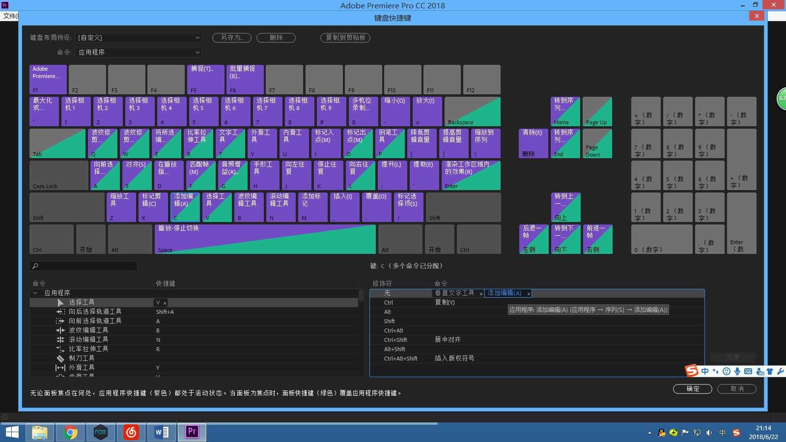

Adobe系列
下载
- 欢迎使用百度云
- Adobe_CC2018_Win链接: https://pan.baidu.com/s/1KgyyRANJ4orpwM6IVS9WNA 密码: 54mh
- Adobe_CC2018_Mac链接: https://pan.baidu.com/s/1LCuOzGDk25tKINJTsxW-cQ 密码: sytv
- Adobe_CC2017_Win链接: https://pan.baidu.com/s/1SKGWMFHGh3En279X7KmO2g 密码: yf5z
- Adobe_CC2017_Mac链接: https://pan.baidu.com/s/1NL84LcxrqO8uLFGGFCBmZA 密码: suqe
- Adobe_CC2015_Win链接: https://pan.baidu.com/s/1iKtFaGH3BdMOzXHOsSwZcQ 密码: 7mqw
- Adobe_CC2014_Win链接: https://pan.baidu.com/s/1n9LuZpR9mSZwCB0si9mdxQ 密码: t549
Adobe软件
提示
- Adobe Creative Cloud: Origin
- Adobe 所有产品 https://www.adobe.com/cn/products/catalog.html
- 此处仅列出部分
- Photoshop
- 图像编辑和合成。
- Lightroom
- 随时随地编辑、整理、存储和共享照片。
- Illustrator
- 矢量图形和插图。
- InDesign
- 面向印刷和数字出版的页面设计和布局。
- Adobe XD
- 设计和分享用户体验并为其创建原型。
- Adobe Premiere Pro
- 符合行业标准的专业视频和电影编辑。
- After Effects
- 电影视觉效果和动态图形。
- Acrobat Pro
- 创建、编辑和签署 PDF 文档和表单。
- Dreamweaver
- 设计和开发新式响应式网站。
- Animate
- 适用于多个平台的交互式动画（以前称作 Flash Professional）。
- Adobe Audition
- 录音、混音和复原。
- Lightroom Classic
- 以桌面为中心的照片编辑。
- Character Animator
- 实时将 2D 人物制成动画。
- Bridge
- 集中管理您的创意资源。
- Media Encoder
- 几乎可向任何屏幕快速输出视频文件。
- InCopy
- 与文案人员和编辑合作。
- Prelude
- 元数据采集、记录和粗剪。。
安装
- 下载
- 解压
- 断网
- 打开setup（如果有登陆界面，请断网）
- 等待安装过程
- 安装之后会显示登陆/使用，关闭该窗口
- 打开
破解破解 - 关闭
破解 - 特别的，AME可以不须要
破解破解破解
安装版本和系统版本
- Adobe CC 2019需要Win10系统才能安装
破解
- CC2018：Adobe.CC2018.Anticloud.r3.exe
- CC2017-：adobe.snr.patch.v2.0-painter.exe
- CC2014-：adobe.snr.patch-painter.exe
Acrobat
- 最新
破解 - 安装后在设置首选项中关闭自动更新，否则会自动更新需要重装
- 为什么只有Acrobat的自动更新有效？…………天生神力
- 作为2015系列使用V2
破解
Adobe PDF(虚拟)打印机相关
- 安装后若不存在，运行以下内容
- 使用bat文件运行
net stop spooler rundll32.exe setupapi.dll,InstallHinfSection AdobePDFPortMonitor 128 "C:\Program Files (x86)\Adobe\Acrobat DC\Acrobat\Xtras\AdobePDF\AdobePDF.inf" net start spooler rundll32.exe printui.dll,PrintUIEntry /if /b "Adobe PDF" /f "C:\Program Files (x86)\Adobe\Acrobat DC\Acrobat\Xtras\AdobePDF\AdobePDF.inf" /r "Documents\*.pdf" /m "Adobe PDF Converter" pause
插入页面功能注意
- 推荐先将页面打印成PDF后在插入，否则可能会比较卡
- （工序繁多，会先导出再插入，会陷入奇怪的状态）
Premiere
轻松使用
- 将快捷键【C】从【剃刀工具】修改为【添加编辑】，按一下【C】即可切成两段
- 